| SchemaSpy Analysis of rsgb.public - Utility TablesSchemaSpy rapport BRMO RSGB datamodel v2.1.0 | Generated by SchemaSpy |
| Generated by SchemaSpy on vr aug. 27 13:21 CEST 2021 |
| ||||||||


 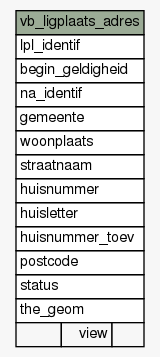
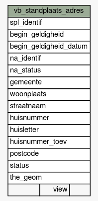
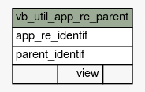
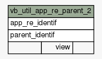
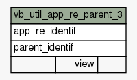
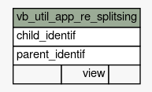
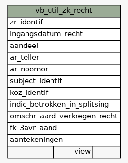
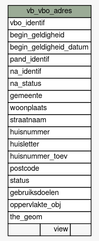
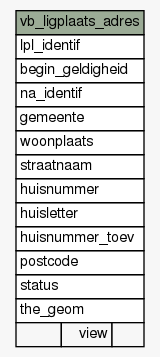
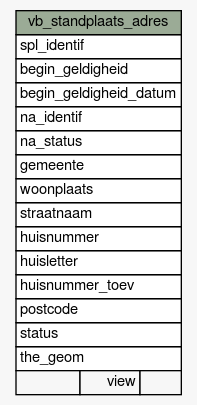
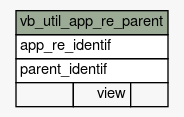
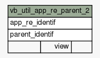
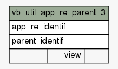
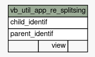
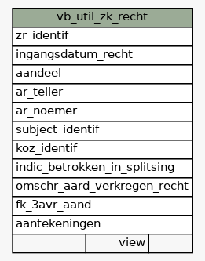
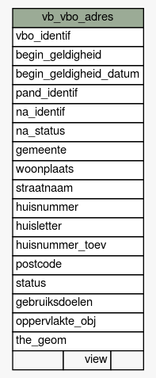